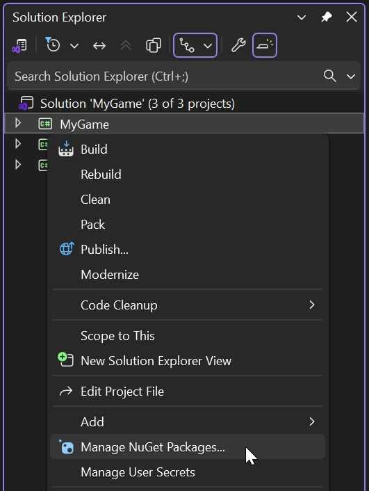
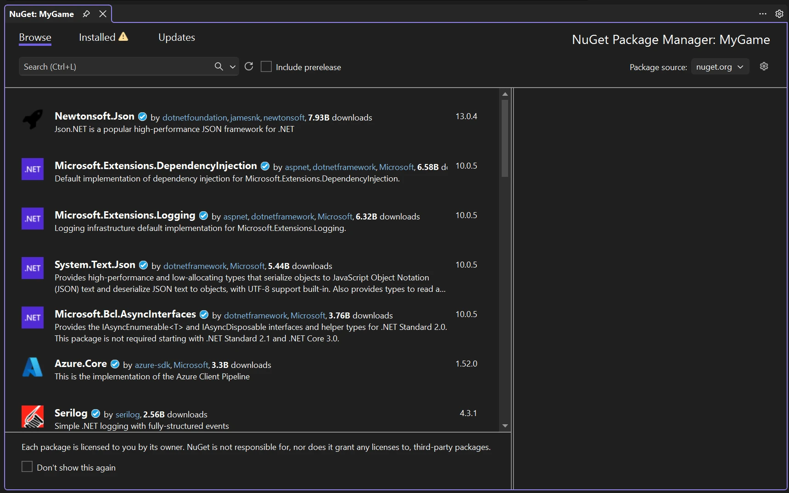
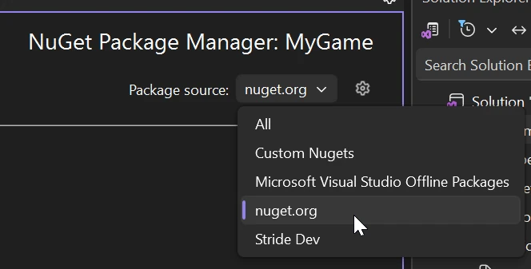
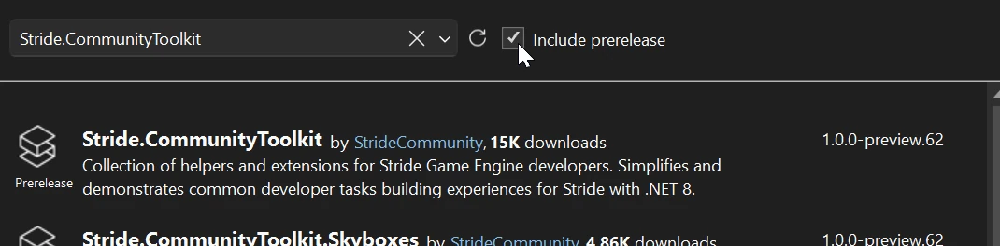
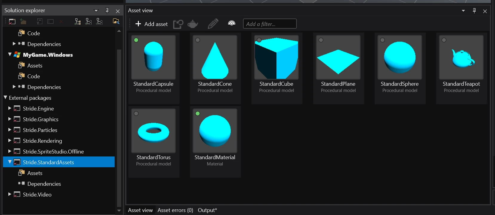

Using NuGet packages
Intermediate
This is a guide on how to use external NuGet packages with Stride.
The idea
An external NuGet package can be added as a dependency of another project package (for .NET developers: as a dependency of another C# project).
In most cases, you would add this to the main non-platform project package (e.g. MyGame, not MyGame.Windows), which contains the majority of code and assets.
Finding NuGet packages
NuGet packages are hosted on nuget.org. You can use this website to search for them.
Note
It's also possible to host your own NuGet feed with packages meant for internal use within your organization. For more information, read the Microsoft article.
Alternatively, check if your IDE of choice has a built-in browser of it's own (like Visual Studio).
Adding an external NuGet package as a dependency
Note
Currently, you cannot do this using Game Studio.
In the Solution Explorer panel, right click on the project package you want to add the NuGet package to and select Manage NuGet packages...

Select the Browser tab and search for the package you want to add.

Note
If no packages are showing up, make sure that the package source is set to nuget.org.

Note
If the package you are looking for isn't showing up, try clicking the include prerelease checkbox.

After selecting the package, click the install button on the right.
Note
Make sure to save!
Using assets in Game Studio
Note
This only applies to packages that include custom Stride assets.
In Game Studio, in the Solution explorer panel, expand External packages and look for the package you have just added.

Note
You may need to reload the project for the package to show up.